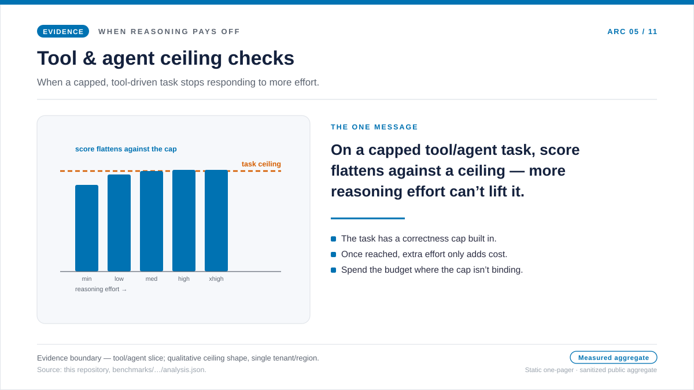
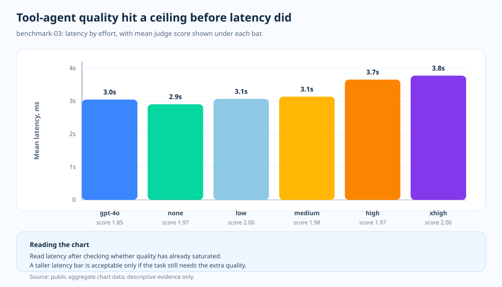

Topic essay · benchmark-03 tool-agent work
Tool-agent work: after quality reaches the ceiling, latency starts speaking
When a team builds a tool-using agent and it starts making mistakes, the first instinct is usually the same: let it think harder. That instinct is reasonable — tool work involves planning, tool selection, intermediate state, and answer synthesis, so more reasoning sounds like it should help. But there is another possibility. Once the tool path is good enough and the rubric is already near the top, extra reasoning may only add latency and cost while the quality score stays capped. Benchmark-03 tests which of those readings is true on a tool-agent slice.
Why we tested this
The situation is familiar. A team ships a tool-using agent, watches it miss on a few cases, and reaches for the reasoning-effort dial. The reasoning is sound: agent work is not pure recall — it has to plan, pick the right tool, carry intermediate state, and then synthesize an answer. On a task with that much structure, "let it think harder" feels like the obvious lever to pull first.
But that leaves two competing readings to check. Maybe extra reasoning genuinely improves tool planning and lifts the answer. Or maybe the tool path and the rubric together form a ceiling: once the agent finds a good-enough route to the answer, more reasoning only adds latency and cost while the quality score sits capped near the top. Benchmark-03 tests which reading holds on a measured slice instead of in the abstract.
So we tested it. Benchmark-03 holds a tool-agent slice fixed and walks the same model and effort ladder — the GPT-4o baseline, then GPT-5.2 at none, low, medium, high, and extra-high effort — reading mean judge score next to latency, cost, and token shape at each cell. The result is worth stating plainly: GPT-5.2 lifted quality over the GPT-4o baseline, but inside GPT-5.2 the quality cells clustered against a ceiling (about 1.97–2.00) while cost, latency, and reasoning tokens kept rising. The one-pager below states that in a single frame, and the sections after it show the measured detail.

Question
When tool-agent quality is already near the top, what does extra effort still buy?
Evidence
benchmark-03 quality, cost, latency, and token-composition charts.
Finding
GPT-5.2 quality held inside a 1.97–2.00 ceiling across the effort ladder while cost climbed from $0.002762 to $0.003499 per request and latency from 2.9s to 3.8s.
Decision
Route tool-agent slices to the lowest effort that reaches the quality ceiling, and treat higher effort as cost and latency you must justify, not a default.

The ceiling effect is the point
Benchmark-03 did not produce a simple monotonic story. GPT-4o averaged a judge score of 1.85. GPT-5.2 none averaged 1.97, low reached 2.00, medium averaged 1.98, high averaged 1.97, and extra-high reached 2.00. That is a quality improvement over the baseline, but it is also a ceiling.
Once several cells are clustered near the top, raising effort is no longer automatically meaningful. The next evidence comes from latency, token shape, and the failure modes hidden inside the aggregate score.
How to read the chart
The chart uses latency as the bar height because quality has already compressed near the top. The X-axis is the model/effort cell. The Y-axis is mean latency in milliseconds. The label under each bar gives the paired mean judge score.
This chart is deliberately not a histogram. It is a comparison of summarized cells: if two cells have similar quality, the shorter bar asks whether the longer wait is still buying something visible.
Why tools change the reading
Tool-agent work includes tool selection, intermediate state, and answer synthesis. That makes the task more demanding than short factual work. It also means the aggregate quality score can hide different kinds of behavior: a cell may pass because the tool did most of the work, or fail because the model used the right tool but summarized poorly.
The charts do not remove the need for inspection. They tell us where to inspect. In this run the attractive region depends on where you set the bar: if you require a strict 2.00, low is the first cell that reaches it; if a near-ceiling score already satisfies the rubric, none qualifies at a latency close to the baseline. Either way the move is the same — find the lowest cell that meets the bar, then read cost and latency before promoting a higher effort.
What this means
Tool-agent benchmarks need two reads. First, ask whether reasoning improved correctness. Then, if quality is clustered near the top, ask which cell keeps latency and token pressure under control. The second read is not an afterthought; it is how the result becomes usable outside the benchmark.
The evidence table
docs/blog/data/chart-data/cost-curves-effort/benchmark-03/quality.json;
read it next to the latency and cost charts in the
evidence dashboard
(served chart data).

| Evidence row | Measure A | Measure B | What it adds |
|---|---|---|---|
| GPT-4o baseline | Score 1.85 | 3.0s mean latency | Strong baseline, but not the ceiling. |
| GPT-5.2 none | Score 1.97 | 2.9s mean latency | Better quality with similar latency. |
| GPT-5.2 low | Score 2.00 | 3.1s mean latency | Ceiling score with modest latency increase. |
| GPT-5.2 extra-high | Score 2.00 | 3.8s mean latency | Ceiling score again, but slower. |
Sources and evidence boundary
Every number above traces to a public artifact in this repository, and every cost claim is priced against a dated snapshot. The routing habit this essay recommends — stop at the lowest effort that reaches the quality ceiling — is its own operating inference. The two tiers below mark where the documented input ends and the inference begins.
- [1] Tier 1 — methodology contract: this repository,
docs/05-methodology.md(v1.0). N = 20 authored samples per cell, R = 3 repeats, public aggregate slice only. The chart-reading prose assumes this frozen stance; error bars are standard deviation, not confidence intervals, and no p-values are claimed at N = 20. - [2] Tier 1 — PAYG pricing snapshot: the per-request cost framing is priced against
pricing/azure-openai-payg-2026-05.yamlin this repository. accessed 2026-05-19: Azure OpenAI pricing page; archive. The cost figures drift if list pricing moves. - [3] Tier 2 — benchmark-03 slice measurement: this repository,
benchmarks/03-tool-using-agent/analysis.json. Source of the ceiling-effect quality bars — the 1.85 GPT-4o baseline and the GPT-5.2 ladder that bounced inside 1.97 (none), 2.00 (low), 1.98 (medium), 1.97 (high), and 2.00 (extra-high) — and the matching cost figures that climbed monotonically from $0.002762 (none) to $0.003499 (extra-high) per request as latency rose from 2.9s to 3.8s. - [4] Tier 2 — rendered chart data: this repository,
docs/blog/data/chart-data/cost-curves-effort/benchmark-03/cost-per-request.json,quality.json, andlatency.json, read together withdocs/blog/data/chart-data/token-composition/benchmark-03/tokens.jsonas paired-reading evidence that the reasoning tokens climbed from 0 to 52.15 per request without moving the quality bar off its ceiling. - [5] Evidence dashboard: the rendered benchmark-03 quality and cost paired chart is the auditable form of the same artifacts.
What this slice does and does not prove: it shows that for this tool-using-agent slice, raising reasoning effort hit a quality ceiling — the GPT-5.2 score never left the 1.97–2.00 band — while cost continued to climb across the effort ladder. It does not prove that the ceiling appears at the same effort level for short factual work, multi-step reasoning, or synthesis work; each topic carries its own measurement.
What the evidence lets us say
For tool-agent work, the useful sentence is not “raise effort.” It is “find the lowest effort that preserves the agent behavior you actually need.”
The practical rule
- Read the quality chart paired with the cost and latency charts for the same benchmark-03 cell, not the quality bar alone.
- Find the lowest effort cell that meets your quality bar — whether that bar is a strict 2.00 or an accepted near-ceiling score — and make that the default.
- Treat any higher effort as cost and latency you must justify with a visible score move.
- Inspect the aggregate before trusting it: a passing cell may lean on the tool, not the reasoning.
- Re-measure when the workload shape changes; this ceiling is for tool-agent work only.
The practical rule: on this tool-agent slice, stop raising reasoning effort once quality reaches the ceiling — the extra effort bought climbing cost and latency, not a higher score.
Next: PTU/PAYG crossover: a planning line, not a capacity result — Once you've sized the workload, when does provisioned throughput beat pay-as-you-go?